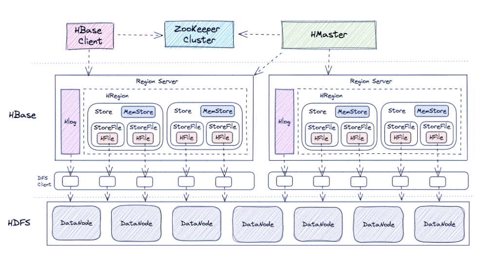
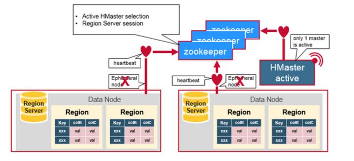
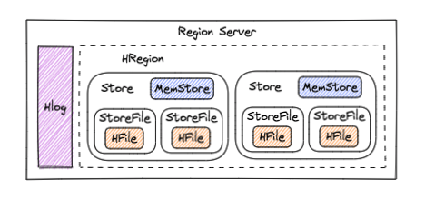
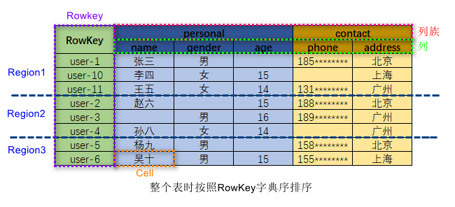

Ch01-HBase 介绍
April 13, 2019
HBase 是一种分布式、可扩展、支持海量数据存储的 NoSQL 数据库。
1. 基本信息 #
| 条目 | 说明 |
|---|---|
| 官网 | https://hbase.apache.org/ |
| 下载地址 | https://hbase.apache.org/downloads.html |
2. 架构介绍 #
2.1 基本组成 #
HBase 的核心架构由五部分组成，分别是 HBase Client、HBase HMaster、HBase Region Server、ZooKeeper 以及 HDFS。它的架构组成如下图所示。

| 组件 | 说明 |
|---|---|
| HBase Client | 为用户提供了访问 HBase 的接口维护了对应的 cache 来加速 Hbase 的访问，比如缓存元数据的信息 |
| HBase Master | 分配 Region 负载均衡（将数据均匀分配到不同的 RegionServer；将用户请求分配到不同的 RegionServer）维护数据，发现失效的 Region，并将失效的 Region 分配到正常的 RegionServer 上 |
| HBase RegionServer | 管理 HMaster 为其分配的 Region 负责与底层的 HDFS 交互，存储数据到 HDFS 负责 Region 变大以后的拆分以及 StoreFile 的合并工作 |
| Apache Zookeeper | 选举 HMaster，当 HMaster 宕机后，通知其他的 Master 参与选举，直到选举出 HMaster 监控 Region Server，当 RegionServer 宕机后，通过回调的形式通知 HMaster 有关 Region Server 上下线的信息维护元数据和集群配置 |
| Apache HDFS | 提供底层数据存储服务，同时为 HBase 提供高可用的支持 |
2.2 相互联系 #

ZooKeeper 用来协调分布式系统的成员之间共享的状态信息。Region Server 及 HMaster 也与 ZooKeeper 连接。ZooKeeper 通过心跳信息为活跃的连接维持相应的 ephemeral node。
每一个 Region server 都在 ZooKeeper 中创建相应的 ephemeral node，HMaster 通过监控这些 ephemeral node 的状态来发现正常工作的或发生故障下线的 Region server。
HMaster 之间通过互相竞争创建 ephemeral node 进行 Master 选举。ZooKeeper 会选出区中第一个创建成功的作为唯一一个活跃的 HMaster。活跃的 HMaster 向 ZooKeeper 发送心跳信息来表明自己在线的状态。不活跃的 HMaster 则监听活跃 HMaster 的状态，并在活跃 HMaster 发生故障下线之后重新选举，从而实现了 HBase 的高可用性。
如果 Region server 或者 HMaster 不能成功向 ZooKeeper 发送心跳信息，则其与 ZooKeeper 的连接超时之后与之相应的 ephemeral node 就会被删除。监听这些 ephemeral node 状态的其他节点就会得到相应 node 不存在的信息，从而进行相应的处理。比如活跃的 HMaster 监听 Region Server 的信息，并在其下线后重新分配 Region server 来恢复相应的服务。不活跃的 HMaster 监听活跃 HMaster 的信息，并在下线后重新选出活跃的 HMaster 进行服务。
2.3 Region #

一个 Region Server 包含多个 Region。
- HLog：即 Write Ahead Log。负责记录着数据的操作日志，当 HBase 出现故障时可以进行日志重放、故障恢复。例如，磁盘掉电导致 MemStore 中的数据没有持久化存储到 StoreFile，这时就可以通过 HLog 日志重放来恢复数据。
- Region：每一个 Region 都有起始 RowKey 和结束 RowKey，代表了存储的 Row 的范围，保存着表中某段连续的数据。一开始每个表都只有一个 Region，随着数据量不断增加，当 Region 大小达到一个阈值时，Region 就会被 Regio Server 水平切分成两个新的 Region。当 Region 很多时，HMaster 会将 Region 保存到其他 Region Server 上。
- Store：一个 Region 由多个 Store 组成，每个 Store 都对应一个 Column Family, Store 包含 MemStore 和 StoreFile。
- MemStore：作为 HBase 的内存数据存储，数据的写操作会先写到 MemStore 中，当 MemStore 中的数据增长到一个阈值（默认 64M）后，Region Server 会启动 flasheatch 进程将 MemStore 中的数据写人 StoreFile 持久化存储，每次写入后都形成一个单独的 StoreFile。当客户端检索数据时，先在 MemStore 中查找，如果 MemStore 中不存在，则会在 StoreFile 中继续查找。
- StoreFile：MemStore 内存中的数据写到文件后就是 StoreFile，StoreFile 底层是以 HFile 的格式保存。HBase 以 Store 的大小来判断是否需要切分 Region。当一个 Region 中所有 StoreFile 的大小和数量都增长到超过一个阈值时，HMaster 会把当前 Region 分割为两个，并分配到其他 Region Server 上，实现负载均衡。
HFile：HFile 和 StoreFile 是同一个文件，只不过站在 HDFS 的角度称这个文件为 HFile，站在 HBase 的角度就称这个文件为 StoreFile。
3. 数据模型 #
HBase 是一个面向列式存储的分布式数据库，它的数据模型与 BigTable 十分相似。在 HBase 表中，一条数据拥有一个全局唯一的键 (RowKey) 和任意数量的列 (Column)，一列或多列组成一个列族 (Column Family)，同一个列族中列的数据在物理上都存储在同一个 HFile 中，这样基于列存储的数据结构有利于数据缓存和查询。
